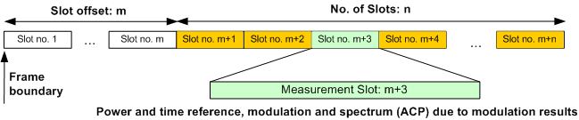

Defining the Scope of the Measurement
The GSM multi-evaluation measurement is a multislot application: The R&S CMW can measure up to 8 consecutive GSM slots (1 frame) and store the power results for all slots.
Within this measurement interval, a single slot ("Measurement Slot") is selected for a more detailed analysis. The measurement slot provides:
- The reference power and time reference (symbol no. 0) for the power vs. time diagram.
- The results in all modulation and spectrum due to modulation diagrams (the spectrum due to switching results are measured over all slots).
- The statistical results in the detailed views of all modulation and spectrum diagrams.
- The list mode results.

If the interval of n measured slots is measured repeatedly, the R&S CMW can evaluate the trace and slot statistics in consecutive intervals.
See also: "Statistical Settings"
Tip: Burst pattern selection The measurement provides different mechanisms for detecting and selecting multislot configurations with specific properties. Refer to the application sheets "Detecting GSM Multislot Frames" and "Capturing GSM Burst Sequences". |